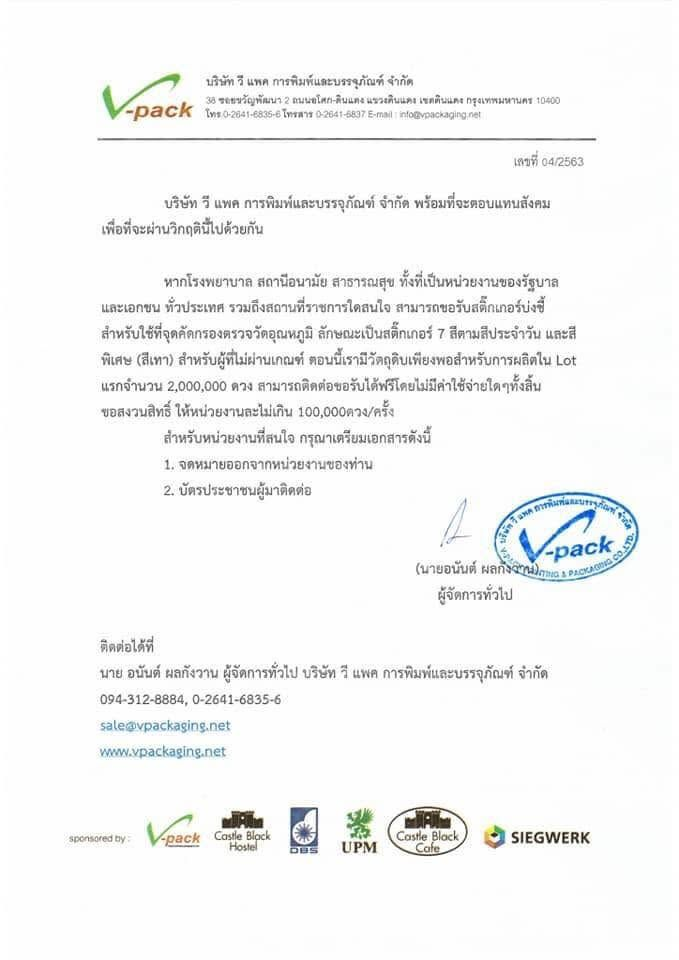
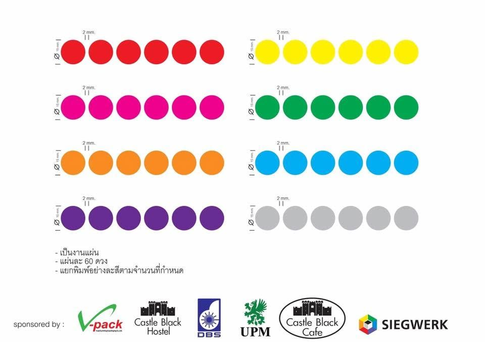
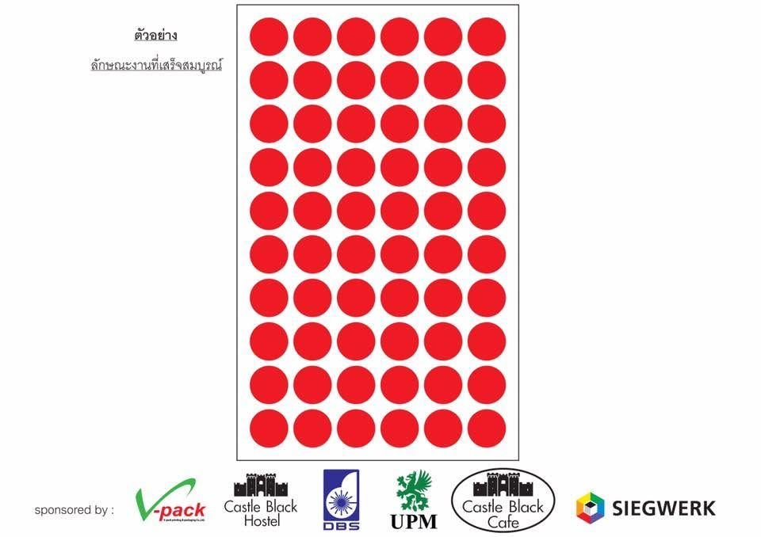

ในช่วงที่โควิด-19 ระบาด (พ.ศ. 2563) V-pack ผลิตสติกเกอร์บ่งชี้สำหรับใช้ที่จุดคัดกรองตรวจวัดอุณหภูมิ และเปิดให้โรงพยาบาล สถานีอนามัย สาธารณสุข ทั้งหน่วยงานรัฐบาลและเอกชนทั่วประเทศ รวมถึงสถานที่ราชการที่สนใจ ขอรับไปใช้ได้ฟรี ไม่มีค่าใช้จ่ายใดๆ
ปัจจุบันโครงการนี้ปิดรับคำขอแล้ว
เราส่งมอบให้หน่วยงานที่ทำเรื่องร้องขอเข้ามา ทั้งในกรุงเทพมหานครและต่างจังหวัด และเก็บภาพกิจกรรมไว้เป็นบันทึกของบริษัท
สีประจำวัน 7 สี และสีพิเศษ (สีเทา) สำหรับผู้ที่ไม่ผ่านเกณฑ์คัดกรอง
แจกฟรี ไม่มีค่าใช้จ่าย หน่วยงานละไม่เกิน 100,000 ดวงต่อครั้ง
สติกเกอร์วงกลม เส้นผ่านศูนย์กลาง 15 มม. เป็นงานแผ่น แผ่นละ 60 ดวง แยกพิมพ์แต่ละสีตามจำนวนที่กำหนด
จดหมายออกจากหน่วยงาน และบัตรประชาชนผู้มาติดต่อ
หนังสือเลขที่ 04/2563 ลงนามโดยนายอนันต์ ผลกังวาน ผู้จัดการทั่วไป (คลิกที่ภาพเพื่อขยาย)


วงกลม 15 มม. เว้นระยะ 2 มม. แยกพิมพ์ตามสี

1 แผ่น มี 60 ดวง
ขอขอบคุณผู้ร่วมสนับสนุนวัตถุดิบและการสนับสนุนโครงการ ได้แก่ Castle Black Hostel, DBS, UPM, Castle Black Cafe และ Siegwerk ร่วมกับ V-pack
โครงการนี้ปิดรับคำขอแล้ว
เกี่ยวกับเรา ติดต่อเรา